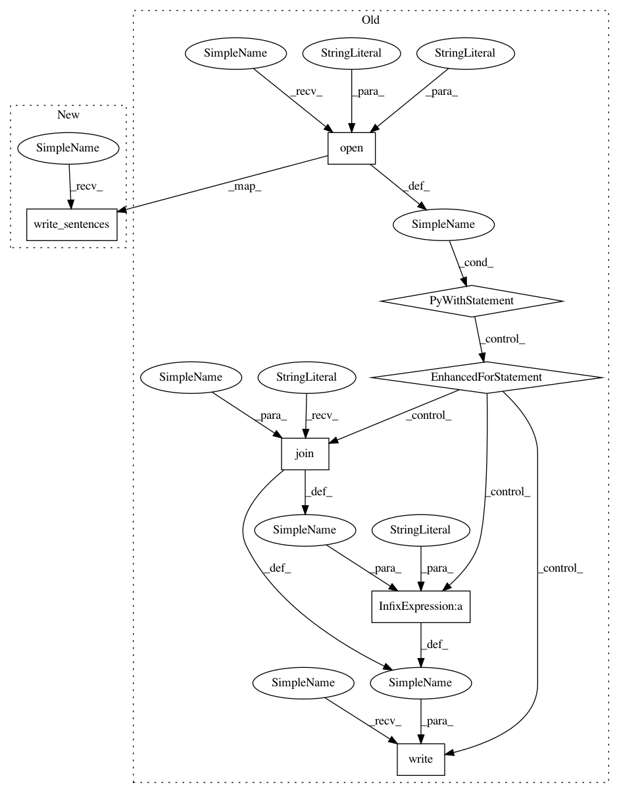

8ec91d8ebde1ccef48fb58c6a446aec10a00f7ca,scripts/machine_translation/train_gnmt.py,,,#,56
Before Change
data_train, data_val, data_test, val_tgt_sentences, test_tgt_sentences, src_vocab, tgt_vocab\
= dataprocessor.load_translation_data(dataset=args.dataset, bleu="tweaked", args=args)
with io.open(os.path.join(args.save_dir, "val_gt.txt"), "w", encoding="utf-8") as of:
for ele in val_tgt_sentences:
of.write(" ".join(ele) + "\n")
with io.open(os.path.join(args.save_dir, "test_gt.txt"), "w", encoding="utf-8") as of:
for ele in test_tgt_sentences:
of.write(" ".join(ele) + "\n")
After Change
data_train, data_val, data_test, val_tgt_sentences, test_tgt_sentences, src_vocab, tgt_vocab\
= dataprocessor.load_translation_data(dataset=args.dataset, bleu="tweaked", args=args)
dataprocessor.write_sentences(val_tgt_sentences, os.path.join(args.save_dir, "val_gt.txt"))
dataprocessor.write_sentences(test_tgt_sentences, os.path.join(args.save_dir, "test_gt.txt"))
data_train = data_train.transform(lambda src, tgt: (src, tgt, len(src), len(tgt)), lazy=False)
data_val = gluon.data.SimpleDataset([(ele[0], ele[1], len(ele[0]), len(ele[1]), i)
In pattern: SUPERPATTERN
Frequency: 4
Non-data size: 7
Instances
Project Name: dmlc/gluon-nlp
Commit Name: 8ec91d8ebde1ccef48fb58c6a446aec10a00f7ca
Time: 2018-11-24
Author: szhengac@users.noreply.github.com
File Name: scripts/machine_translation/train_gnmt.py
Class Name:
Method Name:
Project Name: dmlc/gluon-nlp
Commit Name: 8ec91d8ebde1ccef48fb58c6a446aec10a00f7ca
Time: 2018-11-24
Author: szhengac@users.noreply.github.com
File Name: scripts/machine_translation/train_transformer.py
Class Name:
Method Name: